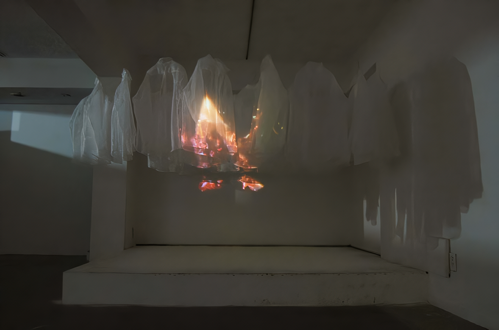
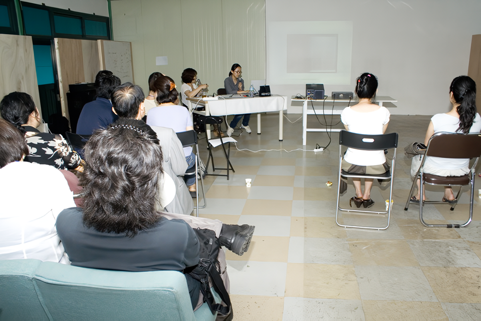

Unspoken Words
강우영 - installation
2008_0801 ▶ 2008_0821 / 일요일 휴관

작가와의 대화 / 2008_0808_금요일_06:30pm
관람시간 / 10:30am~06:30pm / 일요일 휴관
보충대리공간 스톤앤워터
SUPPLEMENT SPACE STONE & WATER
경기도 안양시 만안구 석수2동 286-15번지 2층
Tel. +82.(0)31.472.2886
www.stonenwater.org
작가 강우영은 2001년 이후 현재까지 「unspoken words」라는 주제로 작업을 해왔다. 이것은 말하지 못한 말이나 상대방이 듣지 못해 흘려지거나 잊혀진 말들, 꾹 참아진 말, 닿지 않은 말들 모두를 통칭한다. 이렇듯 추상적인 단어들은 특정한 성격을 가진 장소를 통해, 또는 오랜 탐색의 과정에서 만난 소재들로 구성된 설치 작업들을 통해 실체가 있는 것으로 탈바꿈해왔다. 이번 전시에서 작가는 얇으면서도 쉽게 찢어지지 않는 특성을 가지고 있는 한랭사로 만들어진 셔츠들과 그 사이를 관통하는 듯한 불씨 영상을 통해 또 다른 「unspoken words」를 말하려고 한다.
_waifu2x_photo_noise3_scale.png)
_waifu2x_photo_noise3_scale.png)
전시장 한 켠에 있는 단추로 꼭 채워진 단정한 느낌의 셔츠들은 누군가가 말을 하지 못하고 이것을 자기 안에 담고 있는 자기 억제 또는 자기 제어의 모습을 연상시킨다. 닿지 못한 말을 날려 보내는 것을 형상화한 트레이싱 페이퍼 작업(『기류사이엔 11』展, 모리요시 스튜디오, 일본, 2005년)과 마찬가지로 「unspoken words」의 의미는 그대로 시각화된다. 결국 채워진 셔츠들은 고여 있어 밖으로 나가지 못한 말하지 못한 말, 그리고 작가의 표현에 의하면 애틋함을 가진 '단정한 침묵' 그 자체가 된다. 한편 비어 있는 듯한 투명한 셔츠는 타오르는 불빛을 흡수하는 스크린의 역할을 하며 관람자들에게 강렬한 인상을 준다. 이러한 상황에 놓이는 관람자들은 자신과 다른 사람들의 「unspoken words」에 대해 생각할 시간을 갖게 될 것이다. 강우영의 작품에서는 깨지기 쉬움, 변하기 쉬움, 연약함이라는 정서가 전달되는데 영상으로 볼 수 있는 불씨라는 것도 마찬가지의 맥락에 있다. 불씨는 꺼지려는 것일 수도, 계속 그 상태를 유지하려는 것일 수 있는데 이에 대한 해석 역시 관람자들에게 달려 있다고 작가는 말한다. ● 2000년 삼탄광업소 프로젝트(『the story #1』展, 강원도 고한) 이후 강우영은 자신의 작품이 제대로 성립될 수 있는 공간을 찾아 나가면서 설치 작업으로 그 공간을 새롭게 해석할 수 있는 가능성에 대해 고민해왔다. 외부와 차단된 화이트 큐브에서 연출된 이번 전시에서 작가는 셔츠가 가지는 텅빈 느낌으로 정적인 내부 공간을 그대로 살리면서 불씨라는 동적인 요소를 도입해 두 가지 다른 성격이 맞물리는 상황 자체를 드러내었다. 광업소와 같이 사회적인 메시지를 갖는 외부 공간을 통해 개개인의 「unspoken words」를 사회의 「unspoken words」로 확장했다면 이곳에서는 다시 작가 개인의 내면의 목소리로 돌아와 자신이 하고 싶은 말들을 작품을 통해 전달하려고 하는 것이다.
■ 이윤진

The artist Kang woo-young has worked under the title of Unspoken Words from 2001 up to the present. These words refer to all remarks that are unheard, forgotten, reserved, and untouched. The words with abstract meanings turn to something substantial in specific places and in installations made up of the subject matter Gang met in the course of his exploration. In this exhibition the artist intends to speak of unspoken words through the shirts made of super, or a thin starched cotton mesh, and the video of a fire that seem penetrating it. ● The shirts whose all buttons of exhibition space are fastened and that thus offer a tidy feel recall a state of self-temperance and self-control one cannot reveals. As in his tracing paper workin 2005, the artist visualizes the meaning of unspoken words. The buttoned shirts signify confined words to his inner self and are eventually in a 'neat silence' as he mentioned. Some diaphanous shirts that appear empty assume the role of a screen absorbing firelight, giving viewers a strong impression. The viewers are expected to think over their own or other's unspoken words. The feelings of fragility, vulnerability, and variableness Kang's work evokes are also sensed in his depiction of a fire presented through the screen. The fire is perhaps dying or otherwise remaining the status quo, which depends on viewers' interpretation, the artist says. ● Since the Samtan Mining Project held in Gohan, Gangwon Province in 2000, the artist has put importance on looking for proper places for his work. In the exhibition that is presented in a white cube cut off from the outside, the artist embraced two contrasting elements: its static inner space is reinforced by the shirts evoking a empty feel and a fire seen through the screen appear dynamic. In an external space like a mining station with political undertones, he extended his individual unspoken words to social messages. In this show the artist now returns to his own inward voice, conveying what he wants to say through his work.
■ LEEYOUNJIN